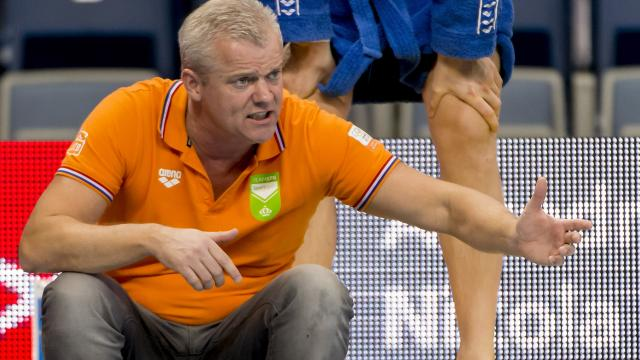

Waterpoloteam AZC Moscow in Champions League

Het Alphense heren waterpoloteam AZC Moscow speelt de komende twee jaar op Europees niveau tegen zestien topteams. De Alphenaren hebben hiervoor een wildcard ontvangen. Hoofdtrainer Ron van der Wild laat weten super trots te zijn.
Lees meer
Havenga tot Tokio 2020 bondscoach waterpolosters

Arno Havenga is ook de komende vier jaar bondscoach van de Nederlandse waterpolodames. De 41-jarige Rotterdammer is met de KNZB tot overeenstemming gekomen over verlenging van zijn contract tot de Olympische Spelen van 2020 in Tokio.
Lees meer
Onderzoek naar mogelijk bewuste nederlaag Franse waterpoloërs

De internationale zwembond FINA doet onderzoek naar het gedrag van de Franse waterpoloërs tijdens het duel met Canada tijdens het Olympisch Kwalificatietoernooi (OKT) van afgelopen week.
lees meer
Waterpoloërs na zege op Canada eerste reserve voor Rio

De waterpoloërs hebben het olympisch kwalificatietoernooi in Triëst zondag afgesloten op de vijfde plaats en zijn daarom de eerste reserve voor de Spelen in Rio de Janeiro.
lees meer